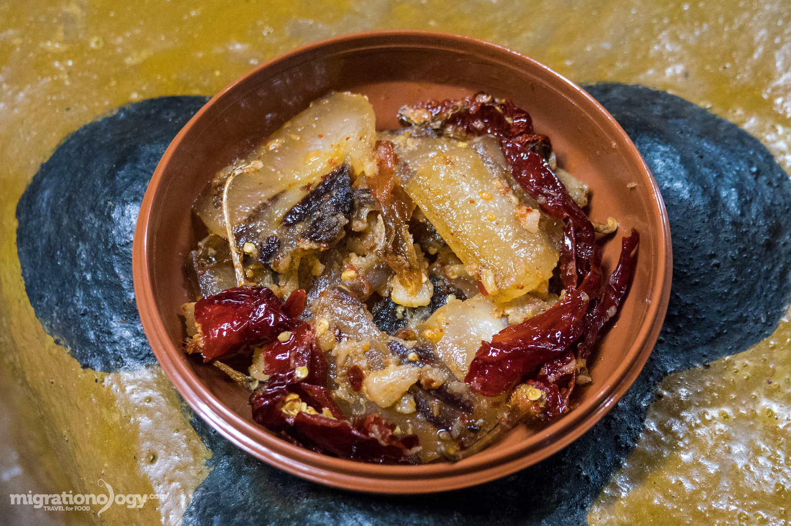

Bhutanese Cuisine: A Culinary Adventure
Bhutan's diverse culinary landscape is a reflection of its rich cultural heritage and diverse geography. From the fiery curries of the south to the hearty stews of the north, Bhutanese cuisine offers a unique and flavorful experience for food enthusiasts.
"Food is not just a delicious meal, it's a journey through cultures and traditions."
- Unknown
One of the staple dishes in Bhutanese cuisine is the beloved ema datshi, a spicy cheese-based stew made with chili peppers and cheese from Bhutan's nomadic communities. This dish perfectly exemplifies the fusion of flavors that characterize Bhutanese food, with the heat of the chilies being balanced by the richness of the cheese.
Another must-try dish is the momos, Bhutan's version of the famous dumplings. These delightful pockets of dough can be filled with various fillings, ranging from vegetables to meat, and are often served with a tangy dipping sauce. Momos are a staple at festivals and celebrations, making them an essential part of the Bhutanese culinary experience.
For those seeking a heartier meal, the jasha maroo, a flavorful combination of chicken or beef cooked with chilies, vegetables, and Bhutanese spices, is a popular choice. This dish is often accompanied by Bhutan's signature red rice, which adds a nutty and earthy undertone to the meal.
No culinary adventure in Bhutan would be complete without trying the traditional butter tea, known as suja. This rich and comforting beverage is made by churning tea leaves, butter, and salt together, creating a unique and satisfying drink that warms the soul.
Whether you're exploring the bustling markets of Thimphu or the quaint villages nestled in the valleys, Bhutanese cuisine promises to tantalize your taste buds and leave you craving for more. Embrace the flavors, embrace the culture, and let your taste buds embark on a culinary journey like no other.